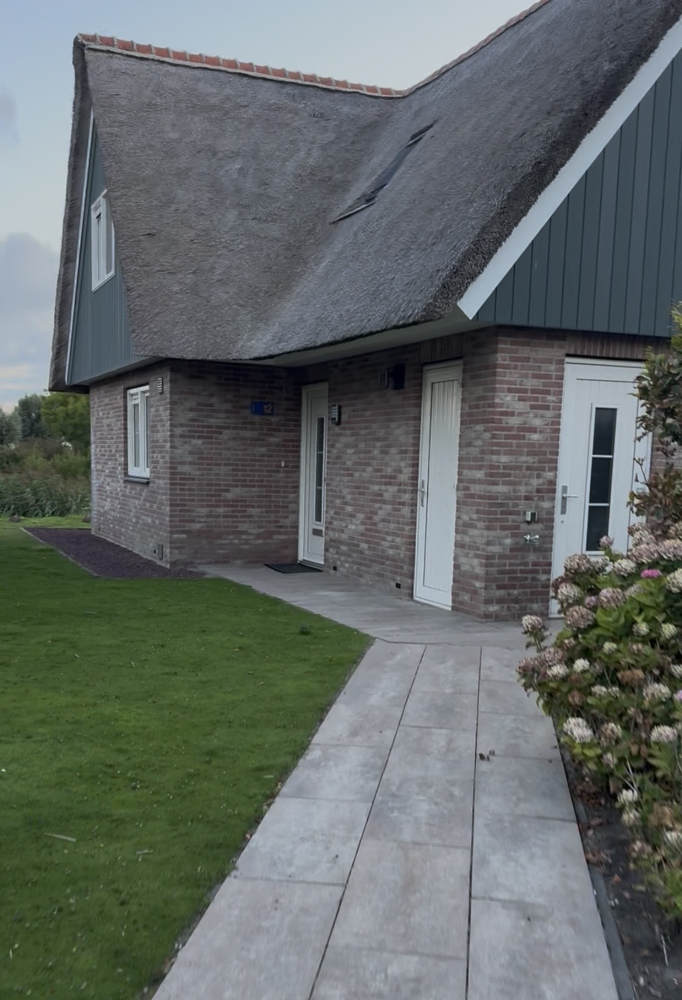
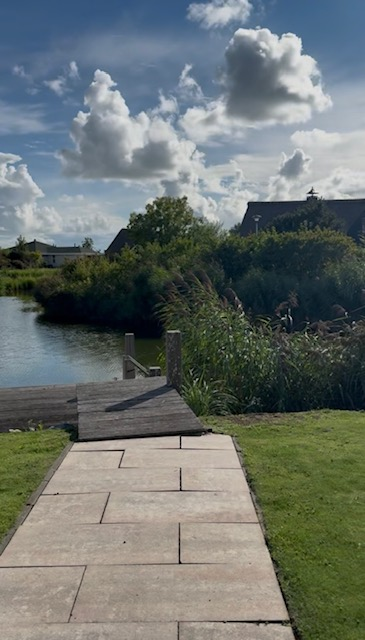
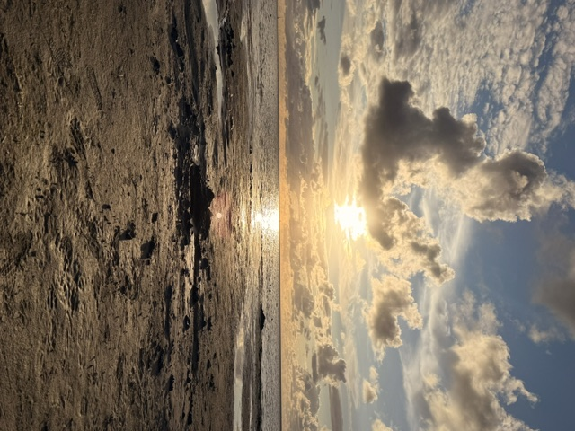
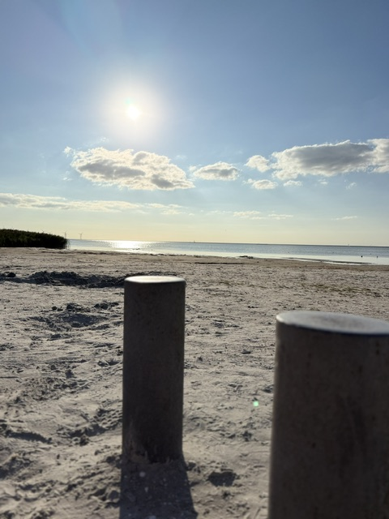
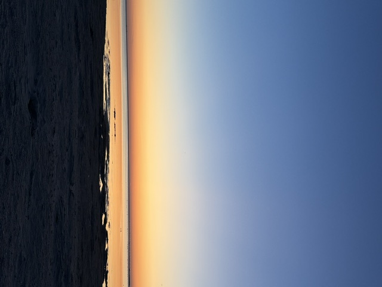
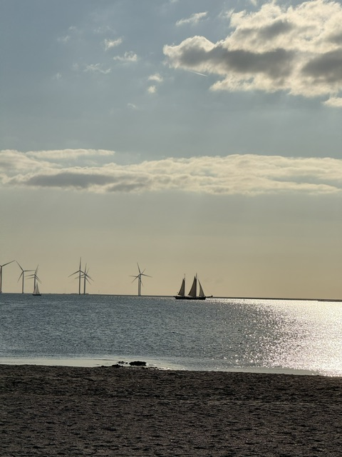
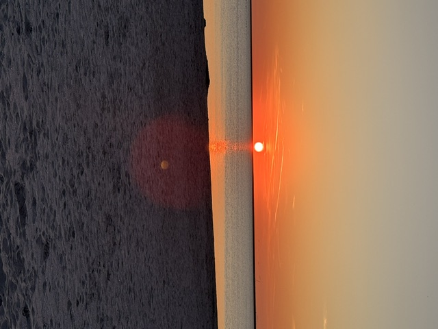

Welkom in Langezand 12
Wat leuk dat je hier bent!
We hopen dat je een heerlijke tijd hebt in Langezand 12. Een plek om even helemaal tot rust te komen, te genieten van het water en natuurlijk van al het moois dat Friesland te bieden heeft.
Of je nu lekker met een kop koffie in de tuin zit, een fietstocht maakt, naar het strand gaat of gewoon helemaal niets doet: geniet vooral van je verblijf.
🌊 Water aan de tuin
Vanuit de woning loop je zo naar de eigen aanlegsteiger
aan het water.

🏠 Ons vakantiehuis
Langezand 12 is een ruime en comfortabele vakantiewoning op Beach Resort Makkum.
Het huis ligt direct aan het water en vlak bij het strand. Je hebt hier alle ruimte om samen te genieten van een ontspannen verblijf.
🌊 Genieten aan het water
Een van de mooiste dingen aan Langezand 12 is natuurlijk de ligging aan het water.
Vanaf de tuin kijk je uit over het water en via de aanlegsteiger kun je lekker bij het water zitten. Een fijne plek voor een kop koffie in de ochtend of een drankje aan het einde van de dag.

🌿 Makkum ontdekken
Vanuit Langezand 12 kun je alle kanten op. Makkum zelf heeft een gezellig historisch centrum, een mooi strand en natuurlijk volop water.
Stap op de fiets en ontdek de omgeving. Kleine dorpjes, mooie fietspaden, oude steden en prachtige uitzichten: er valt genoeg te beleven.
Ontdek de mooie fietsroutes rondom Makkum en door het Friese landschap.
Het strand ligt vlakbij. Ideaal voor een wandeling, een frisse duik of gewoon lekker uitwaaien.
In Makkum en de omliggende plaatsen zijn genoeg gezellige plekken voor koffie, lunch of een drankje.
📸 Sfeer & omgeving
Rondom Langezand 12 is het heerlijk genieten van water, strand, natuur en het mooie Friese landschap.
Vanuit het huis kun je lekker op de fiets stappen, een wandeling maken of gewoon rustig genieten van het uitzicht. Makkum en de omgeving hebben voor iedereen wel iets moois te bieden. 🌊🌿🚲





💡 Alles bij de hand
Op deze website hebben we allerlei informatie verzameld die handig kan zijn tijdens je verblijf.
ℹ️ Praktische informatie 🍽️ Eten en drinken 🚲 Fietsroutes 🌿 Uitjes in de omgeving🌊 Geniet ervan!
Maak er een mooie vakantie van, neem de tijd en geniet van alles wat Makkum en Friesland te bieden hebben.
En wie weet ontdek je onderweg nog een mooi plekje, een leuke fietstocht of een heerlijk lokaal product dat we nog aan de website kunnen toevoegen. 😊
Veel plezier in Langezand 12!